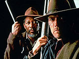

Lechero
 De: La Frikipedia, la enciclopedia extremadamente seria.
De: La Frikipedia, la enciclopedia extremadamente seria.
De la serie grandes personajes:
[[Imagen:|200px|center]]
tu papa
| Nacimiento
|
nunca
|
| Muerte
|
jamás
|
| Ocupación
|
chelero, creador
|
| Nacionalidad
|
lechelandia
|
| Malo o bueno
|
bueno(en la cama)
|
| Atentados contra la humanidad
|
{{{atentados}}}
|
| Religión
|
vacuna
|
| Notas
|
tiene ubres en lugar de polla
|
El es un famoso regador de hijos nacido en la via lactea, hijo de la vaca chenta, ingendrado adentro de su madre, no creado de la misma naturaleza de chente fernandez(hermano del lechero) tambien conocido como junior. El lechero es conocido por su afición a hacer leche a diario y venderla a tu mama con un servicio adicional, y cuya personalidad secreta es la de tu papa. Su verdadera identidad es la de el amante de la esposa de dart vader, quien realmente no sabia quien era el padre.
Sus mejores amigos
Tiene demasiados amigos pero entre sus amigos favoritos se encuentran:
- Tu mamá
- El carnicero
- El mecánico
- El que arregla el refri
- El niñero
- El mo
- Tu abuelita
- Tu esposa
- Tu hija
- Tu suegra
- Tu hermana
- Tu papá
- Tú
Su vida en la actualidad
Foto del lechero cada mañana, cuando empieza su loable labor de repartidor
Actualmente le han salido una serie de hijos de puta enemigos que intentan dejarle en el paro. He aquí algunos reconocidos:
- El Mercadona: este negocio, con sus planes por hacerse con el mundo, no duda ni un segundo en dedicarse a vender leche embotellada. Realmente sabe que así jode al lechero, y por eso lo hace.
- El Carrefour: gran competidor de Mercadona. Como es gabacho y el lechero es de Lechelandia y los del venden los GPS escoñados, no pueden enfrentarse a nuestra querida figura de manera voluntaria.
- Los que beben leche de soja: con su
puta extraña manía de no tomar leche de vaca, cabra, oveja, rata, perro, humano, prefieren consumir ese líquido tan raro sabiendo que lo importan de contrabando desde un país que ni siquiera ellos saben dónde está.
 Enemigos del lechero esperando a que pase éste para intentar matarlo, aunque saben que va a ser muy difícil
- Tibi: esta temerosa potencia sabe que sin lechero, ninguna ciudad aguanta más de diez minutos en paz.
- Harry Petas: él se fabrica la leche a partir de su varita (se acepta pensar mal).
- Carlos Jesús: sus "contactos" no quieren que consuma esa sustancia procedente de un hombre que lleva desde hace millones de años vendiendo leche y que no conoce tiempos de crisis.
- Tu perro: ¿por qué te crees que le ladra en cuanto ve que se acerca a la puerta de tu casa el lechero?
- Cañita Brava: él tiene una fábrica subterránea con más de cien vacas trabajando sin parar. Ve al lechero como su enemigo porque Cañita es el vendedor de su propia leche, y, como todo el mundo, no quiere que haya competencia.
- Todo aquel que ha tenido resaca la noche anterior a que el lechero haga el reparto: el lechero siempre tiene que llamar haciendo un ruido espantoso, sin tener en cuenta que hay gente que tiene el día anterior libre y ha querido coger una borrachera impresionante.
- Los triciclos: estos objetos aparentemente inofensivos no ven con buenos ojos que haya alguien que ofrezca alimento a los niños. (¿Acaso no sabías que los triciclos prentenden acabar con todos los niños del mundo?)
Intentos de asesinato
Le han intentado matar, almenos, 15324543'12 veces, sin conseguirlo ninguna. Obviamente se debe en gran parte a su amistad con el Fary y con Bruce Lee, que le enseñan una millonésima parte de sus enormes conocimientos para que pueda sortear a ese grupo de mamones que intentan acabar con él. Algunos que ya constan en el libro "Hostias que no han servío pa ná" son estos:
- Por bomba atómica: como el lechero tiene muchos años, y ya existía cuando cayó la bomba sobre Hiroshima, le llevaron de manera violenta a aquella ciudad japo para que la palmara de una vez por todas. Como todos sabemos, no tuvo éxito, pues aquella bomba le reconoció y, tras estudiar la situación, comprendió que la contaminación que iba a producir podría neutralizarse con la calidad de un determinado tipo de leche que el lechero ya vendía por aquel entonces: de ratón quemado con aroma a hormiga blanca de Andorra.
- Por susto: todo el mundo sabe que ésa es una de las técnicas que nunca falla, exceptuando, entre otras entes superiores a nosotros, al lechero. Al final, se asustó más el que le quería dar el susto, ya que vio a su posible víctima cargando él solito con dos toneladas de leche, sin ningún tipo de ayuda ajena.
Reunión de los que han intentado cargarse al lechero
- Haciendo la zancadilla: pero como el lechero se desplaza dando saltos de dos metros, consiguió esquivarlo.
- Por gases: exactamente eran del tipo pedo. Tampoco consiguieron nada, puesto que el lechero ya existía cuando en la Tierra todo era metano, es decir, el mundo olía a pedo. Así, a él no le afectan los pedos.
- Por fotos de Carmen de Mairena: otra arma infalible para casi todos, excepto, entre otros, para el lechero. Esto se debe a que él está capacitado para verla en pelotas, y sólo le enseñaron su jeta sin maquillar.
- La canción del Chiki Chiki: a él le gusta, por lo que la canción le hace más fuerza.
- Por documentales de Emos: él es demócrata y un poco muy raro. Así que a él le da igual que haya gente Emo.
- Por ver programas del tipo de Ana Rosa: total, él ha visto hasta los Serrano...
- Por llevar una bandera comunista en una manifestación del PP: ahí estuvo a punto de palmarla, pero llamó a tu madre y le salvó.
Ver también
Autor(es):
- Veni Vidi Vici
- Dark temptation
- E1324
- Kike lm
- Musico
- Ricardoxxxlo
- Law ripley
- Darth Dominus
Frikipedia 2005-2016, Licencia
GFDL 1.2 - Extraído por FrikiLeaks